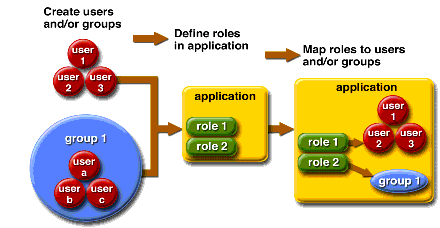

To encrypt a password in domain.xml
To encrypt a password in domain.xmlThis chapter describes some core application server security concepts, and describes how to configure security for the Application Server. This chapter contains the following topics:
Security is about protecting data: how to prevent unauthorized access or damage to it in storage or transit. The Application Server has a dynamic, extensible security architecture based on the J2EE standard. Built in security features include cryptography, authentication and authorization, and public key infrastructure. The Application Server is built on the Java security model, which uses a sandbox where applications can run safely, without potential risk to systems or users. The following topics are discussed:
Broadly, there are two kinds of application security:
In programmatic security, application code written by the developer handles security chores. As an administrator, you don't have any control over this mechanism. Generally, programmatic security is discouraged since it hard-codes security configurations in the application instead of managing it through the J2EE containers.
In declarative security, the container (the Application Server) handles security through an application's deployment descriptors. You can control declarative security by editing deployment descriptors directly or with a tool such as deploytool. Because deployment descriptors can change after an application is developed, declarative security allows for more flexibility.
In addition to application security, there is also system security, which affects all the applications on an Application Server system.
Programmatic security is controlled by the application developer, so this document does not discuss it; declarative security is somewhat less so, and this document touches on it occasionally. This document is intended primarily for system administrators, and so focuses on system security.
The Application Server provides the following tools for managing security:
Admin Console, a browser-based tool used to configure security for the entire server, to manage users, groups, and realms, and to perform other system-wide security tasks. For a general introduction to the Admin Console, see Tools for Administration. For an overview of the security tasks you can perform with the Admin Console, see Managing Security With the Admin Console.
asadmin, a command-line tool that performs many of the same tasks as the Admin Console. You may be able to do some things with asadmin that you cannot do with Admin Console. You perform asadmin commands from either a command prompt or through a script, to automate repetitive tasks. For a general introduction to asadmin, see Tools for Administration.
The Java Enterprise Edition 5 platform (Java EE 5), provides two tools for managing security:
keytool, a command-line utility for managing digital certificates and key pairs. Use keytool to manage users in the certificate realm.
policytool, a graphical utility for managing system-wide Java security policies. As an administrator, you will rarely need to use policytool.
For more information on using keytool, policytool, and other Java security tools, see Java 2 SDK Tools and Utilities at http://java.sun.com/j2se/1.5.0/docs/tooldocs/index.html#security.
In this release of the Application Server, the file domain.xml, which contains the specifications for a particular domain, initially contains the password of the Sun Java System Message Queue broker in clear text. The element in the domain.xml file that contains this password is the admin-password attribute of the jms-host element. Because this password is not changeable at installation time, it is not a significant security impact.
However, use the Admin Console to add users and resources and assign passwords to these users and resources. Some of these passwords are written to the domain.xml file in clear text, for example, passwords for accessing a database. Having these passwords in clear text in the domain.xml file can present a security hazard. You can encrypt any password in domain.xml, including the admin-password attribute or a database password using the following procedure.
To encrypt a password in domain.xml
From the directory where the domain.xml file resides (domain-dir/config by default), run the following asadmin command:
asadmin create-password-alias --user admin alias-name |
For example,
asadmin create-password-alias --user admin jms-password |
A password prompt appears (admin in this case). Refer to the man pages for the create-password-alias, list-password-aliases, delete-password-alias commands for more information.
Remove and replace the password in domain.xml. This is accomplished by using the asadmin set command. The following example shows the use of the set command for changing the password:
asadmin set --user admin server.jms-service.jms-host.
default_JMS_host.admin-password=${ALIAS=jms-password}
|
Restart the Application Server for the relevant domain.
Some files contain encoded passwords that need protecting using file system permissions. These files include the following:
domain-dir/master-password
This file contains the encoded master password and should be protected with file system permission, 600.
Any password file created to pass as an argument using the --passwordfile argument to asadmin should be protected with file system permission, 600.
To change the master password
The master password (MP) is an overall shared password. It is never used for authentication and is never transmitted over the network. This password is the choke point for overall security; the user can choose to enter it manually when required, or obscure it in a file. It is the most sensitive piece of data in the system. The user can force prompting for the MP by removing this file. When the master password is changed, it is saved again in the master-password keystore.
Stop the Application Server for the domain. Use the asadmin change-master-password command, which prompts for the old and new passwords, then re-encrypts all dependent items. For example,
asadmin change-master-password> Please enter the master password> Please enter the new master password> Please enter the the new master password again> |
Restart the Application Server.
 Caution - At this point, server instances that are running must not be started
and running server instances must not be restarted until the SMP on their corresponding
node agent has been changed. If a server instance is restarted before changing its
SMP, it will fail to come up.
Caution - At this point, server instances that are running must not be started
and running server instances must not be restarted until the SMP on their corresponding
node agent has been changed. If a server instance is restarted before changing its
SMP, it will fail to come up.
Stop each node agent and its related servers one at a time. Run the asadmin change-master-password command again, and then restart the node agent and its related servers.
Continue with the next node agent until all node agents have been addressed. In this way, a rolling change is accomplished.
To change the admin password
Encrypting the admin password was discussed in Managing Security of Passwords. Encrypting the admin password is strongly encouraged. If you want to change the admin password before encrypting it, use the asadmin set command. The following example shows the use of set command for changing the password:
asadmin set --user admin server.jms-service.jms-host.default_JMS_host.admin-password=new_pwd |
It is also possible to change the admin password using the Admin Console as in the following procedure.
In the Admin Console tree component, expand the Configuration node.
Expand the Security node.
Expand the Realms node.
Select the admin-realm node.
Click the Manage Users button from the Edit Realm page.
Select the user named admin.
Enter the new password and confirm the password.
Click Save to save or click Close to close without saving.
Security responsibilities are assigned to the following:
The application developer is responsible for the following:
Specifying roles and role-based access restrictions for application components.
Defining an application's authentication method and specifying the parts of the application that are secured.
An application developer can use tools such as NetBeans to edit application deployment descriptors. These security tasks are discussed in more detail in the Security chapter of The Java EE 5 Tutorial, which can be viewed at Sun Java System Application Server Platform Edition 9.0 Java EE Tutorial.
The application deployer is responsible for:
Mapping users or groups (or both) to security roles.
Refining the privileges required to access component methods to suit the requirements of the specific deployment scenario.
The system administrator is responsible for:
Configuring security realms.
Managing user accounts and groups.
Managing audit logs.
Managing server certificates and configuring the server's use of secure sockets layer (SSL).
Handling other miscellaneous system-wide security features, such as security maps for connector connection pools, additional JACC Providers, and so on.
A system administrator uses the Admin Console to manage server security settings and keytool to manage certificates. This document is intended primarily for system administrators.
Authentication and authorization are central concepts of application server security. The following topics are discussed related to authentication and authorization:
Authentication is the way an entity (a user, an application, or a component) determines that another entity is who it claims to be. An entity uses security credentials to authenticate itself. The credentials may be a user name and password or a digital certificate.
Typically, authentication means a user logging in to an application with a user name and password; but it might also refer to an EJB providing security credentials when it requests a resource from the server. Usually, servers or applications require clients to authenticate; additionally, clients can require servers to authenticate themselves, too. When authentication is bidirectional, it is called mutual authentication.
When an entity tries to access a protected resource, the Application Server uses the authentication mechanism configured for that resource to determine whether to grant access. For example, a user can enter a user name and password in a Web browser, and if the application verifies those credentials, the user is authenticated. The user is associated with this authenticated security identity for the remainder of the session.
The Application Server supports four types of authentication, as outlined in Authenticating Entities. An application specifies the type of authentication it uses within its deployment descriptors. For more information on using NetBeans to configure the authentication method for an application, see Security chapter of The Java EE 5 Tutorial, which can be viewed at Sun Java System Application Server Platform Edition 9.0 Java EE Tutorial.
Table 9-1 Application Server Authentication Methods
Authentication Method | Communication Protocol | Description | User Credential Encryption |
Basic | HTTP (SSL optional) | Uses the server's built-in pop-up login dialog box. | None, unless using SSL. |
Form-based | HTTP (SSL optional) | Application provides its own custom login and error pages. | None, unless using SSL. |
Client Certificate | HTTPS (HTTP over SSL) | Server authenticates the client using a public key certificate. | SSL |
Single sign-on enables multiple applications in one virtual server instance to share user authentication state. With single sign-on, a user who logs in to one application becomes implicitly logged in to other applications that require the same authentication information.
Single sign-on is based on groups. All Web applications whose deployment descriptor defines the same group and use the same authentication method (basic, form, digest, certificate) share single sign-on.
Single sign-on is enabled by default for virtual servers defined for the Application Server. For information on disabling single sign-on, see To configure single sign-on (SSO).
Once a user is authenticated, the level of authorization determines what operations can be performed. A user's authorization is based on his role. For example, a human resources application may authorize managers to view personal employee information for all employees, but allow employees to view only their own personal information. For more on roles, see Understanding Users, Groups, Roles, and Realms.
JACC (Java Authorization Contract for Containers) is part of the Java EE 5 specification that defines an interface for pluggable authorization providers. This enables the administrator to set up third-party plug-in modules to perform authorization.
By default, the Application Server provides a simple, file-based authorization engine that complies with the JACC specification. It is also possible to specify additional third-party JACC providers.
JACC providers use the Java Authentication and Authorization Service (JAAS) APIs. JAAS enables services to authenticate and enforce access controls upon users. It implements a Java technology version of the standard Pluggable Authentication Module (PAM) framework.
The Application Server can provide an audit trail of all authentication and authorization decisions through audit modules. The Application Server provides a default audit module, as well as the ability to customize the audit modules. For information on developing custom audit modules, see the Application Server Developer's Guide.
Message Security enables a server to perform end-to-end authentication of web service invocations and responses at the message layer. The Application Server implements message security using message security providers on the SOAP layer. The message security providers provide information such as the type of authentication that is required for the request and response messages. The types of authentication that are supported include the following:
Sender authentication, including username-password authentication.
Content authentication, including XML Digital Signatures.
Two message security providers are included with this release. The message security providers can be configured for authentication for the SOAP layer. The providers that can be configured include ClientProvider and ServerProvider.
Support for message layer security is integrated into the Application Server and its client containers in the form of (pluggable) authentication modules. By default, message layer security is disabled on the Application Server.
Message level security can be configured for the entire Application Server or for specific applications or methods. Configuring message security at the Application Server level is discussed in Overview of SecurityChapter 10, Configuring Message Security. Configuring message security at the application level is discussed in the Developer's Guide chapter titled Securing Applications.
See Also:
The Application Server enforces its authentication and authorization policies upon the following entities:
Users: An individual identity defined in the Application Server. In general, a user is a person, a software component such as an enterprise bean, or even a service. A user who has been authenticated is sometimes called a principal. Users are sometimes referred to as subjects.
Groups: A set of users defined in the Application Server, classified by common traits.
Roles: A named authorization level defined by an application. A role can be compared to a key that opens a lock. Many people might have a copy of the key. The lock doesn't care who seeks access, only that the right key is used.
Realms: A repository containing user and group information and their associated security credentials. A realm is also called a security policy domain.
Note - Users and groups are designated for the entire Application Server, whereas each application defines its own roles. When the application is being packaged and deployed, the application specifies mappings between users/groups and roles, as illustrated in the following figure.
Figure 9-1 Role Mapping
A user is an individual (or application program) identity that has been defined in the Application Server. A user can be associated with a group. The Application Server authentication service can govern users in multiple realms.
A J2EE group (or simply group) is a category of users classified by common traits, such as job title or customer profile. For example, users of an e-commerce application might belong to the customer group, but large customers would belong to the preferred group. Categorizing users into groups makes it easier to control the access of large numbers of users.
A role defines which applications and what parts of each application users can access and what they can do. In other words, roles determine users' authorization levels.
For example, in a personnel application all employees might have access to phone numbers and email addresses, but only managers would have access to salary information. The application might define at least two roles: employee and manager; only users in the manager role are allowed to view salary information.
A role is different from a user group in that a role defines a function in an application, while a group is a set of users who are related in some way. For example, in the personnel application there might be groups such as full-time, part-time, and on-leave, but users in all these groups would still be in the employee role.
Roles are defined in application deployment descriptors. In contrast, groups are defined for an entire server and realm. The application developer or deployer maps roles to one or more groups for each application in its deployment descriptor.
A realm, also called a security policy domain or security domain, is a scope over which the server defines and enforces a common security policy. In practical terms, a realm is a repository where the server stores user and group information.
The Application Server comes preconfigured with three realms: file (the initial default realm), certificate, and admin-realm. It is possible to also set up ldap, solaris, or custom realms. Applications can specify the realm to use in their deployment descriptor. If they do not specify a realm, the Application Server uses its default realm.
In the file realm, the server stores user credentials locally in a file named keyfile. You can use the Admin Console to manage users in the file realm. For more information, see Managing file Realm Users.
In the certificate realm, the server stores user credentials in a certificate database. When using the certificate realm, the server uses certificates with the HTTPS protocol to authenticate Web clients. For more information about certificates, see Introduction to Certificates and SSL.
The admin-realm is also a FileRealm and stores administrator user credentials locally in a file named admin-keyfile. Use the Admin Console to manage users in this realm in the same way you manage users in the file realm. For more information, see Managing file Realm Users.
In the ldap realm the server gets user credentials from a Lightweight Directory Access Protocol (LDAP) server such as the Sun Java System Directory Server. LDAP is a protocol for enabling a user to locate organizations, individuals, and other resources such as files and devices in a network, whether on the public Internet or on a corporate intranet. Consult your LDAP server documentation for information on managing users and groups in the ldap realm.
In the solaris realm the server gets user credentials from the Solaris operating system. This realm is supported on the Solaris 9 OS and later. Consult your Solaris documentation for information on managing users and groups in the solaris realm.
A custom realm is any other repository of user credentials, such as a relational database or third-party component. For more information, see Creating a Custom Realm.
The following topics are discussed in this section:
Digital certificates (or simply certificates) are electronic files that uniquely identify people and resources on the Internet. Certificates also enable secure, confidential communication between two entities.
There are different kinds of certificates, such as personal certificates, used by individuals, and server certificates, used to establish secure sessions between the server and clients through secure sockets layer (SSL) technology. For more information on SSL, see About Secure Sockets Layer.
Certificates are based on public key cryptography, which uses pairs of digital keys (very long numbers) to encrypt, or encode, information so it can be read only by its intended recipient. The recipient then decrypts (decodes) the information to read it.
A key pair contains a public key and a private key. The owner distributes the public key and makes it available to anyone. But the owner never distributes the private key; it is always kept secret. Because the keys are mathematically related, data encrypted with one key can be decrypted only with the other key in the pair.
A certificate is like a passport: it identifies the holder and provides other important information. Certificates are issued by a trusted third party called a Certification Authority (CA). The CA is analogous to a passport office: it validates the certificate holder's identity and signs the certificate so that it cannot be forged or tampered with. Once a CA has signed a certificate, the holder can present it as proof of identity and to establish encrypted, confidential communications.
Most importantly, a certificate binds the owner's public key to the owner's identity. Like a passport binds a photograph to personal information about its holder, a certificate binds a public key to information about its owner.
In addition to the public key, a certificate typically includes information such as:
The name of the holder and other identification, such as the URL of the Web server using the certificate, or an individual's email address.
The name of the CA that issued the certificate.
An expiration date.
Digital Certificates are governed by the technical specifications of the X.509 format. To verify the identity of a user in the certificate realm, the authentication service verifies an X.509 certificate, using the common name field of the X.509 certificate as the principal name.
Web browsers are preconfigured with a set of root CA certificates that the browser automatically trusts. Any certificates from elsewhere must come with a certificate chain to verify their validity. A certificate chain is series of certificates issued by successive CA certificates, eventually ending in a root CA certificate.
When a certificate is first generated, it is a self-signed certificate. A self-signed certificate is one for which the issuer (signer) is the same as the subject (the entity whose public key is being authenticated by the certificate). When the owner sends a certificate signing request (CSR) to a CA, then imports the response, the self-signed certificate is replaced by a chain of certificates. At the bottom of the chain is the certificate (reply) issued by the CA authenticating the subject's public key. The next certificate in the chain is one that authenticates the CA's public key. Usually, this is a self-signed certificate (that is, a certificate from the CA authenticating its own public key) and the last certificate in the chain.
In other cases, the CA can return a chain of certificates. In this case, the bottom certificate in the chain is the same (a certificate signed by the CA, authenticating the public key of the key entry), but the second certificate in the chain is a certificate signed by a different CA, authenticating the public key of the CA to which you sent the CSR. Then, the next certificate in the chain is a certificate authenticating the second CA's key, and so on, until a self-signed root certificate is reached. Each certificate in the chain (after the first) thus authenticates the public key of the signer of the previous certificate in the chain.
Secure Sockets Layer (SSL) is the most popular standard for securing Internet communications and transactions. Web applications use HTTPS (HTTP over SSL), which uses digital certificates to ensure secure, confidential communications between server and clients. In an SSL connection, both the client and the server encrypt data before sending it, then decrypt it upon receipt.
When a Web browser (client) wants to connect to a secure site, an SSL handshake is initiated, as described in the following procedure:
The browser sends a message over the network requesting a secure session (typically, by requesting a URL that begins with https instead of http).
The server responds by sending its certificate (including its public key).
The browser verifies that the server's certificate is valid and is signed by a CA whose certificate is in the browser's database (and who is trusted). It also verifies that the CA certificate has not expired.
If the certificate is valid, the browser generates a one time, unique session key and encrypts it with the server's public key. The browser then sends the encrypted session key to the server so that they both have a copy.
The server decrypts the message using its private key and recovers the session key.
After the handshake, the client has verified the identity of the Web site, and only the client and the Web server have a copy of the session key. From this point forward, the client and the server use the session key to encrypt all their communications with each other. Thus, their communications are ensured to be secure.
The newest version of the SSL standard is called TLS (Transport Layer Security). The Application Server supports the Secure Sockets Layer (SSL) 3.0 and the Transport Layer Security (TLS) 1.0 encryption protocols.
To use SSL, the Application Server must have a certificate for each external interface, or IP address, that accepts secure connections. The HTTPS service of most Web servers will not run unless a digital certificate has been installed. Use the procedure described in To generate a certificate using the keytool utility to set up a digital certificate that your Web server can use for SSL.
A cipher is a cryptographic algorithm used for encryption or decryption. SSL and TLS protocols support a variety of ciphers used to authenticate the server and client to each other, transmit certificates, and establish session keys.
Some ciphers are stronger and more secure than others. Clients and servers can support different cipher suites. Choose ciphers from the SSL3 and TLS protocols. During a secure connection, the client and the server agree to use the strongest cipher they both have enabled for communication, so it is usually sufficient to enable all ciphers.
Using name-based virtual hosts for a secure application can be problematic. This is a design limitation of the SSL protocol itself. The SSL handshake, where the client browser accepts the server certificate, must occur before the HTTP request is accessed. As a result, the request information containing the virtual host name cannot be determined prior to authentication, and it is therefore not possible to assign multiple certificates to a single IP address.
If all virtual hosts on a single IP address need to authenticate against the same certificate, the addition of multiple virtual hosts probably will not interfere with normal SSL operations on the server. Be aware, however, that most browsers will compare the server's domain name against the domain name listed in the certificate, if any (applicable primarily to official, CA-signed certificates). If the domain names do not match, these browsers display a warning. In general, only address-based virtual hosts are commonly used with SSL in a production environment.
A firewall controls the flow of data between two or more networks, and manages the links between the networks. A firewall can consist of both hardware and software elements. This section describes some common firewall architectures and their configuration. The information here pertains primarily to the Application Server. For details about a specific firewall technology, refer to the documentation from your firewall vendor.
In general, configure the firewalls so that clients can access the necessary TCP/IP ports. For example, if the HTTP listener is operating on port 8080, configure the firewall to allow HTTP requests on port 8080 only. Likewise, if HTTPS requests are setup for port 8181, you must configure the firewalls to allow HTTPS requests on port 8181.
If direct Remote Method Invocations over Internet Inter-ORB Protocol (RMI-IIOP) access from the Internet to EJB modules are required, open the RMI-IIOP listener port as well, but this is strongly discouraged because it creates security risks.
In double firewall architecture, you must configure the outer firewall to allow for HTTP and HTTPS transactions. You must configure the inner firewall to allow the HTTP server plug-in to communicate with the Application Server behind the firewall.
The Admin Console provides the means to manage the following aspects of security:
On the Security Settings page, set properties for the entire server, including specifying the default realm, the anonymous role, and the default principal user name and password. For more information, see To configure security settings.
The concept of realms was introduced in Understanding Users, Groups, Roles, and Realms.
Create a new realm
Delete an existing realm
Modify the configuration of an existing realm
Add, modify, and delete users in the file realm
Set the default realm
See Admin Console Tasks for Realms for details on these tasks.
See Also:
JACC providers were introduced in Specifying JACC Providers. Use the Admin Console to perform the following tasks:
Add a new JACC provider
Delete or modify an existing JACC provider
See Admin Console Tasks for JACC Providers for details on these tasks.
See Also:
Audit modules were introduced in Auditing Authentication and Authorization Decisions. Auditing is the method by which significant events, such as errors or security breaches, are recorded for subsequent examination. All authentication events are logged to the Application Server logs. A complete access log provides a sequential trail of Application Server access events.
Use the Admin Console to perform the following tasks:
Add a new audit module
Delete or modify an existing audit module
See Admin Console Tasks for Audit Modules for details on these tasks.
See Also:
The concept of message security was introduced in Configuring Message Security. Use the Admin Console to perform the following tasks:
Enable message security
Configure a message security provider
Delete or configure an existing message security configuration or provider
See Chapter 10, Configuring Message Security for details on these tasks.
See Also:
Each virtual server in the HTTP service provides network connections through one or more HTTP listeners. For general information about the HTTP service and HTTP listeners, see LINK REMOVED What is the HTTP Service?
The Application Server supports CORBA (Common Object Request Broker Architecture) objects, which use the Internet Inter-Orb Protocol (IIOP) to communicate across the network. An IIOP listener accepts incoming connections from remote clients of EJB components and from other CORBA-based clients. For general information on IIOP listeners, see IIOP Listeners.
With the Admin Console, perform the following tasks:
Create a new HTTP or IIOP listener, and specify the security it uses.
Modify the security settings for an existing HTTP or IIOP listener.
See Admin Console Tasks for Listeners and JMX Connectors for details on these tasks.
See Also:
The Admin Service determines whether the server instance is a regular instance, a domain administration server (DAS), or a combination. In the Platform Edition, there is only one server instance, and it is a combination. Use the Admin Service to configure a JSR-160 compliant remote JMX connector, which handles communication between the domain administration server and the node agents, which manage server instances on a host machine, for remote server instances.
With the Admin Console, perform the following tasks:
Manage the Admin Service
Edit the JMX connector
Modify the security settings of the JMX connector
See To configure security for the Admin Service’s JMX connector for details on these tasks.
See Also:
The concept of security maps for connector connection pools is introduced in About Security Maps. Use the Admin Console to perform the following tasks:
Add a security map to an existing connector connection pool
Delete or configure an existing security map
See Admin Console Tasks for Connector Connection Pools for details on these tasks.
See Also:
To configure security settingsThe Security page in the Admin Console enables you to set a variety of system-wide security settings.
In the Admin Console tree component, expand the Configuration node.
Select the Security node.
The Security page displays.
Modify the values as necessary.
The general security options are discussed in the following table.
Setting | Description |
|---|---|
Audit Logging | Select to enable audit logging. If enabled, the server will load and run all the audit modules specified in the Audit Modules setting. If disabled, the server does not access audit modules. Disabled by default. |
Default Realm | The active (default) realm the server uses for authentication. Applications use this realm unless they specify a different realm in their deployment descriptor. All configured realms appear in the list. The initial default realm is the file realm. |
Anonymous Role | The name for the default or anonymous role. The anonymous role is assigned to all users. Applications can use this role in their deployment descriptors to grant authorization to anyone. |
Default Principal | Specifies the default user name. The server uses this when no principal is provided. If you enter a value in this field, enter a corresponding value in the Default Principal Password field. This attribute is not required for normal server operation. |
Default Principal Password | Password of the default principal specified in the Default Principal field. This attribute is not required for normal server operation. |
JACC | Class name of a configured JACC provider. See To create a JACC provider |
Audit Modules | List of audit module provider classes, delimited by commas. A module listed here must already be configured. If Audit Logging is enabled, this setting must list audit modules. By default, the server uses an audit module named default. For information on creating new audit modules, see To create an audit module. |
Default Principal to Role Mapping | Click Enable to apply a default principal-to-role mapping to any application that does not have an application-specific principal-to-role mapping defined. At the command line, you can enable this option as follows: asadmin set server.security-service.activate-default-principal-to-role-mapping=true |
Mapped Principal Class | Enter CustomPrincipalImplClass. This attribute is used to customize the java.security.Principal implementation class used in the default principal to role mapping. This attribute is optional. When it is not specified, the com.sun.enterprise.deployment.Group implementation of java.security.Principal is used. The value of this attribute is only relevant when Default Principal to Role Mapping is enabled. At the command line, you can specify the mapped principal class as follows: asadmin set server.security-service.mapped-principal-class=CustomPrincipalImplClass |
Enter additional properties to pass to the Java Virtual Machine (JVM) in the Additional Properties section.
Valid properties are dependent upon the type of realm selected in the Default Realm field. Valid properties are discussed in the following sections:
Select Save to save the changes or Load Defaults to restore the default values.
To grant access to administration toolsOnly users in the asadmin group are able to access Admin Console and the asadmin command line utility.
To give a user access to these administration tools, add them to the asadmin group in the admin-realm.
In the Admin Console tree component, expand the Configuration node.
Expand the Security node.
Expand the Realms node.
Select the admin-realm node.
Click the Manage Users button from the Edit Realm page.
Initially after installation, the administrator user name and password entered during installation are listed in a file named admin-keyfile. By default, this user belongs to the group asadmin, which gives rights to modify the Application Server. Assign users to this group only if you want to grant them administrator privileges for the Application Server.
If you add users to the admin-realm realm, but assign the user to a group other than asadmin, the user information will still be written to the file named admin-keyfile, but the user will have no access to administrative tools or to applications in the file realm.
Click New to add a new user to the admin-realm realm.
Enter the correct information into the User ID, Password, and Group List fields.
To authorize a user to make modifications to the Application Server, include the asadmin group in the Group List.
Click OK to add this user to the admin-realm realm or click Cancel to quit without saving.
To create a realmThe Application Server comes preconfigured with three realms: file, certificate, and admin-realm. It is also possible to create ldap, solaris, and custom realms. Generally, you will have one realm of each type on a server, but on the Application Server there are two file realms: file and admin-realm. These are two realms of the same type used for two different purposes. It is also possible to have a different certificate database for each virtual server on your system.
In the Admin Console tree component, expand the Configuration node.
Expand the Security node.
Select the Realms node.
On the Realms page, click New.
The Create Realm page is displayed.
Enter a name for the realm in the Name field.
Specify the class name for the realm being created.
Valid choices are shown in the following table.
Realm Name | Class Name |
|---|---|
file | com.sun.enterprise.security.auth.realm.file.FileRealm |
certificate | com.sun.enterprise.security.auth.realm.certificate.CertificateRealm |
ldap | com.sun.enterprise.security.auth.realm.ldap.LDAPRealm |
solaris | com.sun.enterprise.security.auth.realm.solaris.SolarisRealm |
custom | Name of login realm class |
Add the required properties and any desired optional properties for the realm.
Click Add Property.
In the Name field, enter the name of the property.
For a description of file realm properties, see Editing the file and admin-realm Realms.
For a description of certificate realm properties, see Editing the certificate Realm.
For a description of ldap realm properties, see Creating an ldap Realm.
For a description of solaris realm properties, see Creating the solaris Realm.
For a description of custom realm properties, see Creating a Custom Realm.
In the Value field, enter the value of the property.
Click OK.
create-auth-realm
To edit a realmIn the Admin Console tree component, expand the Configuration node.
Expand the Security node.
Expand the Realms node.
Select the name of an existing realm.
The Edit Realm page displays.
Edit existing properties and their values as desired.
To add additional properties, click the Add Properties button.
The page displays a new row. Enter a valid property name and property value.
For a description of file realm properties, see Editing the file and admin-realm Realms.
For a description of certificate realm properties, see Editing the certificate Realm.
For a description of ldap realm properties, see Creating an ldap Realm.
For a description of solaris realm properties, see Creating the solaris Realm.
For a description of custom realm properties, see Creating a Custom Realm.
Click Save to save the changes.
To delete a realmIn the Admin Console tree component, expand the Configuration node.
Expand the Security node.
Select the Realms node.
Click in the box beside the realm to be deleted.
Click Delete.
delete-auth-realm
To set the default realmThe default realm is the realm that the Application Server uses for authentication and authorization if an application's deployment descriptor does not specify a realm.
In the Admin Console tree component, expand the Configuration node.
Select the Security node.
The Security page displays.
In the Default Realm field, pick the desired realm from the drop-down list.
Click Save to save the changes or Load Defaults to delete changes and restore the Application Server default values.
Restart the server if Restart Required displays in the console.
This section covers the following topics:
The ldap realm performs authentication using information from an LDAP server. User information includes user name, password, and the groups to which the user belongs. To use an LDAP realm, the users and groups must already be defined in your LDAP directory.
To create an LDAP realm, follow the steps in To create a realm for adding a new realm, and add the properties shown in the following table.
Table 9-2 Required properties for ldap realm
Property Name | Description | Value |
|---|---|---|
directory | LDAP URL of the directory server. | LDAP URL of the form ldap://hostname:portFor example, ldap://myldap.foo.com:389. |
base-dn | Base Distinguished Name (DN) for the location of user data, which can be at any level above the user data, since a tree scope search is performed. The smaller the search tree, the better the performance. | Domain for the search, for example: dc=siliconvalley, dc=BayArea, dc=sun, dc=com. |
jaas-context | Type of login module to use for this realm. | Must be ldapRealm. |
Optional properties for the ldap realm are shown in the following table.
Table 9-3 Optional properties for ldap realm
Property Name | Description | Default |
|---|---|---|
search-filter | Search filter to use to find the user. | uid=%s (%s expands to the subject name). |
group-base-dn | Base DN for the location of group data. | Same as the base-dn, but it can be tuned if necessary. |
group-search-filter | Search filter to find group memberships for the user. | uniquemember=%d (%d expands to the user element DN). |
group-target | LDAP attribute name that contains group name entries. | CN |
search-bind-dn | Optional DN used to authenticate to the directory for performing the search-filter lookup. Only required for directories that do not allow anonymous search. | |
search-bind-password | LDAP password for the DN given in search-bind-dn. |
For example, suppose an LDAP user, Joe Java, is defined in the LDAP directory as follows:
uid=jjava,ou=People,dc=acme,dc=com uid=jjava givenName=joe objectClass=top objectClass=person objectClass=organizationalPerson objectClass=inetorgperson sn=java cn=Joe Java |
Using the example code, when creating or editing the ldap realm, you can enter the values as shown in the following table.
Table 9-4 Example ldap realm values
Property Name | Property Value |
|---|---|
directory | LDAP URL to your server, for example: ldap://ldap.acme.com:389 |
base-dn | ou=People,dc=acme,dc=com. Can be rooted higher, for example dc=acme, dc=com, but searches would traverse a larger part of the tree, reducing performance. |
jaas-context | ldapRealm |
The solaris realm gets user and group information from the underlying Solaris user database, as determined by the system's configuration. The solaris realm invokes the underlying PAM infrastructure for authenticating. If the configured PAM modules require root privileges, the domain must run as root to use this realm. For details, see the Solaris documentation for security services.
The solaris realm has one required property, jaas-context that specifies the type of login module to use. The property value must be solarisRealm.
Note - The solaris realm is supported only for Solaris 9 or later.
In addition to the four built-in realms, you can also create custom realms that store user data in some other way, such as in a relational database. Development of a custom realm is outside the scope of this document. For more information, see the Application Server Developer's Guide chapter titled Securing Applications.
As an administrator, the main thing you need to know is that a custom realm is implemented by a class (called the LoginModule) derived from the Java Authentication and Authorization Service (JAAS) package.
To create a custom realm
Follow the procedure outline in To create a realm, entering the name of the custom realm and the name of the LoginModule class.
Any unique name can be used for the custom realm, for example myCustomRealm.
Add the properties for a custom realm shown in the following table.
Property Name | Property Value |
|---|---|
jaas-context | LoginModule class name, for example simpleCustomRealm |
auth-type | Description of the realm, for example "A simple example custom realm". |
Click OK.
Edit the domain's login configuration file, domain-dir/config/login.conf, and add the fully-qualified class name of the JAAS LoginModule at the end of the file, as follows:
realmName {
fully-qualified-LoginModule-classname required;
};
|
For example,
myCustomRealm {
com.foo.bar.security.customrealm.simpleCustomLoginModule required;
};
|
Copy the LoginModule class and all dependent classes into the directory domain-dir/lib/classes.
Restart the Server if Restart Required displays in the console.
Make sure that the realm is properly loaded.
Check domain-dir/logs/server.log to make sure the server loaded the realm. The server should invoke the realm's init() method.
The certificate realm supports SSL authentication. This realm sets up the user identity in the Application Server's security context, and populates it with user data obtained from cryptographically verified client certificates in the truststore and keystore files (see About Certificate Files). Add users to these files using keytool. For more information, see The J2EE 1.4 Tutorial chapter titled Security at http://java.sun.com/j2ee/1.4/docs/tutorial/doc/index.html.
With the certificate realm, J2EE containers handle authorization processing based on each user's Distinguished Name (DN) from his or her certificate. The DN is the name of the entity whose public key the certificate identifies. This name uses the X.500 standard, so it is intended to be unique across the Internet. For more information on key stores and trust stores, refer to the keytool documentation at http://java.sun.com/j2se/1.4.2/docs/tooldocs/solaris/keytool.html.
The following table lists the optional properties for the certificate realm.
Table 9-5 Optional properties for certificate realm
Property | Description |
|---|---|
assign-groups | A comma-separated list of group names. All clients who present valid certificates are assigned to these groups. For example, employee,manager, where these are the names of user groups. |
jaas-context | Type of login module to use for this realm. For the certificate realm, the value must be certificateRealm. |
See Also:
The server maintains all user, group, and password information in a file named keyfile for the file realm and admin-keyfile for the admin-realm. For both, the file property specifies the location of the keyfile. The following table shows required properties for a file realm.
Table 9-6 Required properties for file realms
Property name | Description | Default Value |
|---|---|---|
file | Full path and name of the keyfile. | domain-dir/config/keyfile |
jaas-context | Type of login module to use for this realm. | fileRealm is the only valid value |
The keyfile is initially empty, so users must be added before the file realm is used. For instructions, see Managing file Realm Users.
The admin-keyfile initially contains the admin user name, the admin password in an encrypted format, and the group to which this user belongs, which is asadmin by default. For more information on adding users to the admin-realm, read To grant access to administration tools.
Note - Users in the group asadmin in the admin-realm are authorized to use the Admin Console and asadmin tools. Add only users to this group that have server administrative privileges.
In the Enterprise Edition only, you can manage users using the Admin Console as discussed in Managing file Realm Users or you can manage users using NSS tools. Network Security Services (NSS) is a set of libraries designed to support cross-platform development of security-enabled client and server applications. Applications built with NSS can support SSL v2 and v3, TLS, PKCS #5, PKCS #7, PKCS #11, PKCS #12, S/MIME, X.509 v3 certificates, and other security standards. For detailed information, link to the following URLs:
Network Security Services (NSS) at http://www.mozilla.org/projects/security/pki/nss/
NSS Security Tools at http://www.mozilla.org/projects/security/pki/nss/tools/
Overview of NSS at http://www.mozilla.org/projects/security/pki/nss/overview.html
Manage file realm users with the Admin Console. Users and groups in the file realm are listed in the keyfile, whose location is specified by the file property.
Note - It is also possible to use these steps to add users to any file realm, including the admin-realm. Simply substitute the name of the target realm in place of the file realm referenced in this section.
A user in the file realm can belong to a J2EE group, a category of users classified by common traits. For example, customers of an e-commerce application might belong to the CUSTOMER group, but the big spenders would belong to the PREFERRED group. Categorizing users into groups makes it easier to control the access of large numbers of users.
Initially after installation of the Application Server, the only user is the administrator entered during installation. By default, this user belongs to the group asadmin, in the realm admin-realm, which gives rights to modify the Application Server. Any users assigned to this group will have administrator privileges, that is, they will have access to the asadmin tool and the Admin Console.
To manage file realm users, perform these tasks:
To access the File Users page
In the Admin Console tree component, expand the Configuration node.
Expand the Security node.
Expand the Realms node.
Select the file node.
Click the Manage Users button from the Edit Realm page.
The File Users page displays. In this page, perform the following tasks:
To add a user
Click New to add a new user to the file realm.
Enter the following information on the File Users page:
User ID (required) - The name of the user.
Password (required) - The user password.
Confirm Password (required) - The user password again, for verification.
Group List (optional) - A comma-separated list of the groups to which the user belongs. These groups do not need to be defined elsewhere.
Click OK to add this user to the list of users in the file realm. Click Cancel to quit without saving.
create-file-user
To edit user information
In the User ID column, click the name of the user to be modified.
The Edit File Realm User page displays.
Change the user password by entering a new password in the Password and Confirm Password fields.
Change the groups to which the user belongs by adding or deleting groups in the Group List field.
Separate group names with commas. Groups need not be previously defined.
Click Save to save this user to the list of users in the file realm.
Click Close to quit without saving.
To delete a user
Select the checkbox to the left of the name of the user(s) to be deleted.
Click Delete.
Click Close to return to the Edit Realm page.
delete-file-user
In mutual authentication, both server and client-side authentication are enabled. To test mutual authentication, a client with a valid certificate must exist. For information on mutual authentication, see the Security chapter of The J2EE 1.4 Tutorial at http://java.sun.com/j2ee/1.4/docs/tutorial/doc/index.html.
To enable mutual authentication for a specific application, use deploytool to set the method of authentication to Client-Certificate. For more information about using deploytool, refer to the Security chapter of The J2EE 1.4 Tutorial at http://java.sun.com/j2ee/1.4/docs/tutorial/doc/index.html.
To enable mutual authentication for all the applications
The Application Server uses the certificate realm for HTTPS authentication.
In the Admin Console tree component, expand the Configuration node.
Expand the Security node.
Expand the Realms node.
Select the certificate realm.
Click the Add Property button.
In the Name field, enter clientAuth.
In the Value field, enter true.
Click Save.
Restart the Application Server if Restart Required displays in the console.
After restarting the server, client authentication is required for all applications that use the certificate realm.
To create a JACC providerJACC (Java Authorization Contract for Containers) is part of the J2EE 1.4 specification that defines an interface for pluggable authorization providers. This enables the administrator to set up third-party plug in modules to perform authorization. By default, the Application Server provides a simple, JACC-compliant file-based authorization engine.
In the Admin Console tree component, expand the Configuration node.
Expand the Security node.
Select the JACC Providers node.
On the JACC Providers page, click New.
On the Create JACC Provider page, enter the following:
Name - The name to use to identify this provider.
Policy Configuration - The name of the class that implements the policy configuration factory. The default provider uses com.sun.enterprise.security.provider.PolicyConfigurationFactoryImpl.
Policy Provider - The name of the class that implements the policy factory. The default provider uses com.sun.enterprise.security.provider.PolicyWrapper.
Add properties to the provider by clicking the Add Property button. Valid properties include:
repository - the directory that contains the policy file. For the default provider, this value is ${com.sun.aas.instanceRoot}/generated/policy.
Click OK to save this configuration, or click Cancel to quit without saving.
To edit a JACC providerIn the Admin Console tree component, expand the Configuration node.
Expand the Security node.
Expand the JACC Providers node.
Select the node of the JACC provider to be edited.
On the Edit JACC Provider page, modify the provider information as desired:
Policy Configuration - The name of the class that implements the policy configuration factory.
Policy Provider - The name of the class that implements the policy factory.
To add properties, click the Add button. Enter the name and value for the property. Valid entries include:
repository - the directory that contains the policy file. For the default provider, this value is ${com.sun.aas.instanceRoot}/generated/policy.
To delete an existing property, click in the checkbox to the left of the property, then click Delete Properties.
Click Save to save or click the browser's back button to cancel without saving.
To delete a JACC providerIn the Admin Console tree component, expand the Configuration node.
Expand the Security node.
Select the JACC Providers node.
Click in the checkbox to the left of the JACC provider to be deleted.
Click Delete.
To set the active JACC providerIn the Admin Console tree component, expand the Configuration node.
Select the Security node.
The Security page displays.
In the JACC field, enter the name of the JACC provider to be used by the server.
If you don't know which JACC providers are available, expand the JACC Provider component in the tree to view all configured JACC providers.
Select Save to save the changes or Load Defaults to return to the default values.
Restart the Application Server if Restart Required displays in the console.
To create an audit moduleThe Application Server provides a simple default audit module; for more information, see To use the default audit module.
In the Admin Console tree component, expand the Configuration node.
Expand the Security node.
Select the Audit Modules node.
On the Audit Modules page, click New.
On the Create Audit Module page, enter the following information:
Name - The name used to identify this audit module.
Classname - The fully-qualified name of the class that implements this module. The class name for the default audit module is com.sun.enterprise.security.Audit.
To add JVM properties to this module, click Add Property. Specify a name and value for each property. Valid properties include:
auditOn - Specifies whether or not to enable this implementation class. Valid values are true and false.
Click OK to save entries, or click Cancel to quit without saving.
To edit an audit moduleAudit modules are not turned on by default. For more information on how to activate audit modules, read To enable or disable audit logging.
In the Admin Console tree component, expand the Configuration node.
Expand the Security node.
Expand the Audit Modules node.
Click the node of the audit module to be edited.
On the Edit Audit Module page, modify the class name, if needed.
Enter any additional properties for the module by selecting the Add button and entering the name and value of the property. Valid properties include:
auditOn - Specifies whether or not to use this audit module. Valid values are true and false.
Modify any existing properties by selecting the name or value to be modified, and entering the changes directly into the text field.
Delete a property by selecting the checkbox to the left of the property and clicking Delete Properties.
Click Save to save or click the Back button on the browser to cancel without saving.
To delete an audit moduleIn the Admin Console tree component, expand the Configuration node.
Expand the Security node.
Select the Audit Modules node.
Click in the checkbox to the left of the audit module to be deleted.
Click Delete.
To enable or disable audit loggingIn the Admin Console tree component, expand the Configuration node.
Select the Security node.
The Security page displays.
To enable logging, select the Audit Logging check box. To disable it, deselect it.
Selecting this option causes the loading of the audit modules and ensures they are called by the Application Server's audit library at audit points.
If you are enabling audit logging, specify a default audit module as described in To set the active audit module.
Select Save to save the changes.
Restart the Application Server if Restart Required displays in the console.
To set the active audit moduleTo specify the audit module that the server uses, first enable audit logging as described in To enable or disable audit logging.
In the Audit Modules field, enter the name of the audit module to be used by the server.
The preconfigured audit module is called default. Make sure that this audit module has auditOn set to true as described in To use the default audit module.
Select Save to save the changes, Load Defaults to cancel.
Restart the Application Server if Restart Required displays in the console.
To use the default audit moduleThe default audit module logs authentication and authorization requests to the server log file. For information on changing the location of the log file, see To configure general logging settings.
Authentication log entries include the following information:
Names of users who attempted to authenticate.
The realm that processed the access request.
The requested Web module URI or EJB component.
Success or failure of the request.
Regardless of whether audit logging is enabled, the Application Server logs all denied authentication events.
Authorization log entries include the following information:
Names of authenticated users, if any.
The requested Web URI or EJB component.
Success or failure of the requests.
In the Admin Console tree component, expand the Configuration node.
Expand the Security node.
Expand the Audit Modules node.
Click the default node.
Set the value of the auditOn property to true.
Select Save to save the changes.
Restart the Application Server if Restart Required displays in the console.
To configure security for HTTP listenersEach virtual server in the HTTP service provides network connections through one or more HTTP listeners. With the Admin Console, create new HTTP listeners and edit the security settings of existing HTTP listeners.
In the Admin Console tree component, expand the Configuration node.
Expand the HTTP Service node.
Select the HTTP Listeners node.
Select an HTTP listener to edit an existing listener or click New and follow the procedure in LINK REMOVED To create an HTTP listener. to create a new listener.
Follow the procedure in To set listener security properties to set security properties.
Click Save to save the changes, or click the browser's Back button to cancel without saving.
create-http-listener
To configure security for IIOP listenersThe Application Server supports CORBA (Common Object Request Broker Architecture) objects, which use the Internet Inter-Orb Protocol (IIOP) to communicate across the network. An IIOP listener accepts incoming connections from remote clients of EJB components and from other CORBA-based clients. With the Admin Console, create new IIOP listeners and edit the settings of existing IIOP listeners.
In the Admin Console tree component, expand the Configuration node.
Expand the ORB node.
Select the IIOP Listeners node.
Select an IIOP listener to edit that listener or click New and follow the procedure in To create an IIOP listener to create a new listener.
Follow the procedure in To set listener security properties to set security properties.
Click Save to save the changes, or click Load Defaults to restore the properties to their default values.
If a new listener was created, it will now be listed in the Current Listeners table on the IIOP Listeners page.
create-iiop-listener
To configure security for the Admin Service's JMX connectorIn the Admin Console tree component, expand the Configuration node.
Expand the Admin Service node.
Select the admin service to be modified.
Follow the procedure in To set listener security properties to set security properties.
Click Save to save the changes, or click Load Defaults to restore the properties to their default values.
To set listener security propertiesThis procedure applies to HTTP listener, IIOP listener, and JMX Connector security properties.
In the Edit HTTP Listener, Edit IIOP Listener, or Edit JMX Connector page, go to the section labeled SSL.
Check the Enabled box in the Security field to enable security for this listener. When this option is selected, you must select SSL3 or TLS to specify which type of security is enabled, and you must enter a certificate nickname.
Check the Enabled box in the Client Authentication field if clients are to authenticate themselves to the Application Server when using this listener.
Enter the keystore alias in the Certificate Nickname field if the Enabled box is checked. The keystore alias is a single value that identifies an existing server key pair and certificate. The certificate nickname for the default keystore is s1as.
To find the Certificate Nickname, use keytool, as shown in the following example:keytool -list -v -keystore keystore.jks.
If the name has changed in the keystore file, then use that name instead of keystore.jks.
Select SSL3 and/or TLS if the Enabled box is checked. By default, both SSL3 and TLS are enabled.
Enable individual cipher suites, if needed. By default, all supported cipher suites are enabled. Ciphers are discusses in About Ciphers.
Select Save to save the changes or Load Defaults to cancel.
To secure CORBA objectsCORBA objects include Java RMI-IIOP and Java IDL or POA based CORBA objects, excluding EJB modules. By default, authentication is not required for CORBA objects.
Configure authentication, if desired.
Expand the ORB node, and then the IIOP Listeners node.
Click the SSL listener.
Select the Security Enabled checkbox.
Click Save.
Restart the Application Server.
Once authentication is turned on, all clients need to authenticate by supplying a user name and password (if using basic authentication) or a certificate (if using SSL mutual authentication).
Configure authorization.
To turn on authorization for CORBA objects, specify the appropriate security policy in the server's security configuration file, domain-dir/config/server.policy.
By default, all users are allowed to access all non-EJB CORBA objects in the server, as specified by the following default grant block:
grant { permission com.sun.enterprise.security.CORBAObjectPermission "*", "*"; }
|
CORBAObjectPermission is a special Java Permission class that controls which users are allowed to access non-EJB CORBA objects in the server. CORBAObjectPermission takes two parameters:
A CORBA object name.
In the Application Server, only the name "*" is supported, that is, it is not possible to specify a specific CORBA object name.
A comma-separated list of method names.
In the Application Server, only "*" is supported, that is, it is not possible to specify a specific method name.
The general form of a CORBAObjectPermission grant block is:
grant principal principal-class-name "principal-name" {
permission com.sun.enterprise.security.CORBAObjectPermission "*", "*";
}
|
where the principal-class-name is either:
com.sun.enterprise.deployment.PrincipalImpl (for a single principal)
com.sun.enterprise.deployment.Group (for a named group of principals)
Configure message protection:
Integrity and confidentiality of IIOP messages used in requests and replies during CORBA invocations can be protected by using SSL. By default, the server supports both plain IIOP and IIOP-over-SSL invocations.
To force clients to use only SSL for IIOP invocations, remove all non-SSL iiop-listener elements in the iiop-service element in domain.xml.
This ensures that the server will not service plain IIOP invocations. By default, application clients use plain IIOP for making requests if the server supports plain IIOP.
To force the client to use SSL, a change is needed in the application client configuration file sun-acc.xml (which is also located in the domain's config directory).
Specifically, the property ssl with value required should be added inside the <client-container> element, as follows:
<client-container> <property name="ssl" value="required"/> <target-server .... /> </client-container> |
To configure single sign-on (SSO)Single sign-on enables multiple applications to share user sign-on information, rather than requiring each application to have separate user sign-on. Applications using single sign-on authenticate the user one time, and the authentication information is propagated to all other involved applications.
Single sign-on applies to Web applications configured for the same realm and virtual server.
Note - Single sign-on uses an HTTP cookie to transmit a token that associates each request with the saved user identity, so it can be used only when the browser client supports cookies.
Single sign-on operates according to the following rules:
When a user accesses a protected resource in a Web application, the server requires the user to authenticate himself or herself, using the method defined for that Web application.
Once authenticated, the Application Server uses the roles associated with the user for authorization decisions across all Web applications on the virtual server, without challenging the user to authenticate to each application individually.
When the user logs out of one Web application (explicitly, or because of session expiration), the user's sessions in all Web applications become invalid. Thereafter, the user is required to log in to access a protected resource in any application.
In the Admin Console tree component, expand the Configuration node.
Expand the HTTP Service node.
Expand the Virtual Servers node, and select the virtual server to be configured for single sign-on support.
Click Add Property.
A blank property entry is added to the bottom of the list.
Enter sso-enable in the Name field.
Enter false in the Value field to disable, enter true to enable SSO.
SSO is enabled by default.
Add or change any other single sign-on properties by clicking Add Property and configuring any applicable SSO properties.
Valid SSO properties for virtual servers are discussed in the following table.
Property Name | Description | Values |
|---|---|---|
sso-max-inactive-seconds | Number of seconds after which a user's single sign-on record becomes eligible for purging, if no client activity is received. Access to any of the applications on the virtual server keeps the single sign-on record active. | Default is 300 seconds (5 minutes). A higher value provides longer persistence for users, but consumes more memory on the server. |
sso-reap-interval-seconds | Interval (in seconds) between purges of expired single sign-on records. | Default is 60. |
Click Save.
Restart the Application Server if Restart Required displays in the console.
A connector module (also called a resource adapter) enables J2EE applications to interact with enterprise information systems (EIS). A connector resource provides an application with a connection to an EIS. A connector connection pool is a group of reusable connections for a particular EIS.
Security maps enables the creation of a mapping between J2EE users and groups and EIS users and groups. Use the Admin Console to create, update, list, and delete security maps for connector connection pools.
Note - In this context, users are referred to as principals. The enterprise information system (EIS) is any system that holds the information. It can be a mainframe, a messaging system, a database system, or an application.
See Also:
Use security maps to map the caller identity of the application (principal or user group) to a suitable EIS principal in container-managed transaction-based scenarios. When an application principal initiates a request to an EIS, the application server first checks for an exact principal using the security map defined for the connector connection pool to determine the mapped back end EIS principal. If there is no exact match, then the application server uses the wild card character specification, if any, to determine the mapped back end EIS principal. Security maps are used when an application user needs to execute EIS operations that require to be executed as a specific identity in the EIS.
Use the following procedures in the Admin Console to manage security maps:
See Also:
To create a security mapA security map for a connector connection pool maps application users and groups (principals) to EIS principals. Use a security map when an application user needs to execute EIS operations that require a specific identity in the EIS.
Expand the Resources node
Expand the Connectors node.
Select the Connector Connection Pools node.
Select a Connector Connection Pool by selecting its name from the list of current pools or create a new connector connection pool by selecting New from the list of current pools.
Select the Security Maps page.
Click New to create a new Security Map.
On the Create Security Map page, enter the following properties.
Name - Enter a name to be used to reference this particular security map.
User Groups - The caller identity of the application to be mapped to a suitable EIS principal. Enter a comma-separated list of application-specific user groups, or enter the wild card asterisk (*) to indicate all users or all user groups. Specify either the Principals or User Groups options, but not both.
Principals - The caller identity of the application to be mapped to a suitable EIS principal. Enter a comma-separated list of application-specific principals, or enter the wild card asterisk (*) to indicate all principals. Specify either the Principals or User Groups options, but not both.
In the Backend Principal section, enter the following properties.
Username - Enter the EIS user name. The enterprise information system (EIS) is any system that holds the information. It can be a mainframe, a messaging system, a database system, or an application.
Password - Enter the password for the EIS user.
Click OK to create the security map or Cancel to quit without saving.
create-connector-security-map
To edit a security mapExpand the Resources node.
Expand the Connectors node.
Select the Connector Connection Pools node.
Select a Connector Connection Pool by selecting its name from the list of current pools.
Select the Security Maps page.
On the Security Maps page, select a security map from the list of current security maps.
On the Edit Security Map page, modify the following properties where needed.
User Groups - The caller identity of the application to be mapped to a suitable EIS principal. Enter a comma-separated list of application-specific user groups, or enter the wild card asterisk (*) to indicate all users or all user groups. Specify either the Principals or User Groups options, but not both.
Principals - The caller identity of the application to be mapped to a suitable EIS principal. Enter a comma-separated list of application-specific principals, or enter the wild card asterisk (*) to indicate all principals. Specify either the Principals or User Groups options, but not both.
In the Backend Principal section, enter the following properties.
Username - Enter the EIS user name. The enterprise information system (EIS) is any system that holds the information. It can be a mainframe, a messaging system, a database system, or an application.
Password - Enter the password for the EIS user.
Click Save to save the changes to the security map.
list-connector-security-maps and update-connector-security-maps
To delete a security mapExpand the Resources node.
Expand the Connectors node.
Select the Connector Connection Pools node.
Select a Connector Connection Pool by selecting its name from the list of current pools.
Select the Security Maps page.
On the Security Maps page, click the checkbox to the left of the name of the security map to be deleted.
Click Delete.
delete-connector-security-map
Installation of the Application Server generates a digital certificate in JSSE (Java Secure Socket Extension) format suitable for internal testing. By default, the Application Server stores its certificate information in two files in the domain-dir/config directory:
Keystore file, keystore.jks, contains the Application Server's certificate, including its private key. The keystore file is protected with a password, initially changeit. Change the password using keytool. For more information about keytool, read Using the keytool Utility.
Each keystore entry has a unique alias. After installation, the Application Server keystore has a single entry with alias s1as.
Truststore file, cacerts.jks, contains the Application Server's trusted certificates, including public keys for other entities. For a trusted certificate, the server has confirmed that the public key in the certificate belongs to the certificate's owner. Trusted certificates generally include those of certification authorities (CAs).
In the Platform Edition, on the server side, the Application Server uses the JSSE format, which uses keytool to manage certificates and key stores. In the Enterprise Edition, on the server side, the Application Server uses NSS, which uses certutil to manage the NSS database which stores private keys and certificates. In both editions, the client side (appclient or stand-alone), uses the JSSE format.
By default, the Application Server is configured with a keystore and truststore that will work with the example applications and for development purposes. For production purposes, you may wish to change the certificate alias, add other certificates to the truststore, or change the name and/or location of the keystore and truststore files.
See also:
To change the location of certificate filesThe keystore and truststore files provided for development are stored in the domain-dir/config directory.
In the Admin Console tree, select the Application Server node.
Select JVM Settings.
Click the JVM Options tab.
On the JVM Options page, add or modify the following values in the Value field to reflect the new location of the certificate files:
-Djavax.net.ssl.keyStore=${com.sun.aas.instanceRoot}/path/ks-name
-Djavax.net.ssl.trustStore=${com.sun.aas.instanceRoot}/path/ts-name
|
where ks-name is the keystore file name and ts-name is the trust store file name.
Click Save.
Restart the Application Server if Restart Required displays in the console.
Use keytool to set up and work with JSSE (Java Secure Socket Extension) digital certificates. In the Platform Edition, the Application Server uses the JSSE format on the server side to manage certificates and key stores. In both the Platform Edition and Enterprise Edition, the client side (appclient or stand-alone) uses the JSSE format.
The J2SE SDK ships with keytool, which enables the administrator to administer public/private key pairs and associated certificates. It also enables users to cache the public keys (in the form of certificates) of their communicating peers.
To run keytool, the shell environment must be configured so that the J2SE /bin directory is in the path, or the full path to the tool must be present on the command line. For more information on keytool, see the keytool documentation at http://java.sun.com/j2se/1.5.0/docs/tooldocs/solaris/keytool.html.
The following examples demonstrate usage related to certificate handling using JSSE tools:
Create a self-signed certificate in a keystore of type JKS using an RSA key algorithm. RSA is public-key encryption technology developed by RSA Data Security, Inc. The acronym stands for Rivest, Shamir, and Adelman, the inventors of the technology.
keytool -genkey -noprompt -trustcacerts -keyalg RSA -alias ${cert.alias}
-dname ${dn.name} -keypass ${key.pass} -keystore ${keystore.file}
-storepass ${keystore.pass}
|
Another example of creating a certificate is shown in To generate a certificate using the keytool utility.
Create a self-signed certificate in a keystore of type JKS using the default key algorithm.
keytool -genkey -noprompt -trustcacerts -alias ${cert.alias} -dname
${dn.name} -keypass ${key.pass} -keystore ${keystore.file} -storepass
${keystore.pass}
|
An example of signing a certificate is shown in To sign a digital certificate using the keytool utility
Display available certificates from a keystore of type JKS.
keytool -list -v -keystore ${keystore.file} -storepass ${keystore.pass}
|
Display certificate information from a keystore of type JKS.
keytool -list -v -alias ${cert.alias} -keystore ${keystore.file}
-storepass ${keystore.pass}
|
Import an RFC/text-formatted certificate into a JKS store. Certificates are often stored using the printable encoding format defined by the Internet RFC (Request for Comments) 1421 standard instead of their binary encoding. This certificate format, also known as Base 64 encoding, facilitates exporting certificates to other applications by email or through some other mechanism.
keytool -import -noprompt -trustcacerts -alias ${cert.alias} -file
${cert.file} -keystore ${keystore.file} -storepass ${keystore.pass}
|
Export a certificate from a keystore of type JKS in PKCS7 format. The reply format defined by the Public Key Cryptography Standards #7, Cryptographic Message Syntax Standard, includes the supporting certificate chain in addition to the issued certificate.
keytool -export -noprompt -alias ${cert.alias} -file ${cert.file}
-keystore ${keystore.file} -storepass ${keystore.pass}
|
Export a certificate from a keystore of type JKS in RFC/text format.
keytool -export -noprompt -rfc -alias ${cert.alias} -file
${cert.file} -keystore ${keystore.file} -storepass ${keystore.pass}
|
Delete a certificate from a keystore of type JKS.
keytool -delete -noprompt -alias ${cert.alias} -keystore ${keystore.file}
-storepass ${keystore.pass}
|
Another example of deleting a certificate from a keystore is shown in Deleting a Certificate Using the keytool Utility
See also:
To generate a certificate using the keytool utilityUse keytool to generate, import, and export certificates. By default, keytool creates a keystore file in the directory where it is run.
Change to the directory where the certificate is to be run.
Always generate the certificate in the directory containing the keystore and truststore files, by default domain-dir/config. For information on changing the location of these files, see To change the location of certificate files.
Enter the following keytool command to generate the certificate in the keystore file, keystore.jks:
keytool -genkey -alias keyAlias-keyalg RSA -keypass changeit -storepass changeit -keystore keystore.jks |
Use any unique name as your keyAlias. If you have changed the keystore or private key password from their default, then substitute the new password for changeit in the above command.
A prompt appears that asks for your name, organization, and other information that keytool uses to generate the certificate.
Enter the following keytool command to export the generated certificate to the file server.cer (or client.cer if you prefer):
keytool -export -alias keyAlias-storepass changeit -file server.cer -keystore keystore.jks |
If a certificate signed by a certificate authority is required, see To sign a digital certificate using the keytool utility.
To create the truststore file cacerts.jks and add the certificate to the truststore, enter the following keytool command:
keytool -import -v -trustcacerts -alias keyAlias -file server.cer -keystore cacerts.jks -keypass changeit |
If you have changed the keystore or private key password from their default, then substitute the new password for changeit in the above command.
The tool displays information about the certificate and prompts whether you want to trust the certificate.
Type yes, then press Enter.
Then keytool displays something like this:
Certificate was added to keystore [Saving cacerts.jks] |
Restart the Application Server.
To sign a digital certificate using the keytool utilityAfter creating a digital certificate, the owner must sign it to prevent forgery. E-commerce sites, or those for which authentication of identity is important can purchase a certificate from a well-known Certificate Authority (CA). If authentication is not a concern, for example if private secure communications is all that is required, save the time and expense involved in obtaining a CA certificate and use a self-signed certificate.
Follow the instructions on the CA's Web site for generating certificate key pairs.
Download the generated certificate key pair.
Save the certificate in the directory containing the keystore and truststore files, by default domain-dir/config directory. See To change the location of certificate files.
In your shell, change to the directory containing the certificate.
Use keytool to import the certificate into the local keystore and, if necessary, the local truststore.
keytool -import -v -trustcacerts -alias keyAlias -file server.cer -keystore cacerts.jks -keypass changeit -storepass changeit |
If the keystore or private key password is not the default password, then substitute the new password for changeit in the above command.
Restart the Application Server.
To delete an existing certificate, use the keytool -delete command, for example:
keytool -delete -alias keyAlias -keystore keystore-name -storepass password |
For a complete list of possible options for the -delete command, refer to the keytool documentation at http://java.sun.com/j2se/1.5.0/docs/tooldocs/solaris/keytool.html.
See Also:
The Java 2 Standard Edition discussion of security can be viewed from http://java.sun.com/j2se/1.5.0/docs/guide/security/index.html.
The J2EE 1.4 Tutorial chapter titled Security can be viewed from http://java.sun.com/j2ee/1.4/docs/tutorial/doc/index.html.
The Administration Guide chapter titled Chapter 10, Configuring Message Security.
The Developer's Guide chapter titled "Securing Applications."